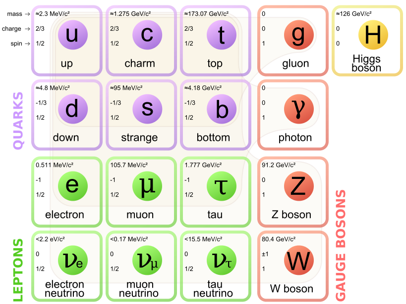
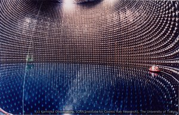
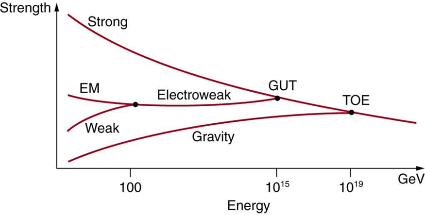
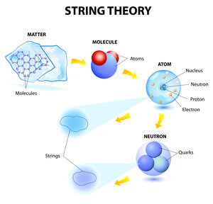

At the current time we do have a good understanding of a good proportion of particle physics. As laid out in the current theories section, we can accurately describe the electromagnetic, strong and weak interactions through quantised gauge theories. In addition to what was laid out in these pages, we also have a theory of how mass is generated through the Higgs mechanism and how the electromagnetic and weak interactions can be unified at large enough energies. All of this theory is combined into the standard model of particle physics, the best theory of fundamental interactions that we currently have. The standard model incorporates a particular set of fundamental particles which are shown in the figure below.
So far, experiments have discovered all of the fundamental particles of the standard model and experimental results for branching fractions and cross sections are generally in good agreement with its predictions, however there are some shortcomings of the theory.
Firstly, some interactions involving exotic bottom quarks do not seem to be quite consistent with predictions made by the standard model[1]. Although the level of significance is too low to firmly state a contradiction, it is possible that this line of research may eventually lead to unexplainable phenomena. Furthermore, the standard model has difficulties incorporating the discovery of neutrino mass through flavour oscillations at observatories such as Super Kamiokande[2], pictured below.
In addition to these experimental discrepancies, the standard model does not incorporate gravity, the force that is so familiar and ubiquitous. Even worse than this, the standard model is incompatible with the incredibly accurate General Theory of Relativity, which has recently been vindicated by the measurement of gravitational waves by the LIGO and Virgo collaborations[3]. Current research is now concerned with trying to unify these theories, explaining any experimental discrepancies in a field known as "Physics Beyond the Standard Model".
The current aim of physicists working in this field is to create a "theory of everything" in the form a self-consistent theory describing all four fundamental forces on all scales. Glashow, Salam and Weinberg began this idea by unifying the electromagnetic and weak interactions into electroweak theory. This was based on the observation that at sufficiently high energies, the "strength" of the interations converged to the same value. A similar behaviour is seen for the strong interaction and may suggest that all four forces unify at high energies, as shown in the figure below.
There are different ways of trying to construct a theory to explain everything, with the two most publicised being those of string theory and loop quantum gravity. String theory suggests that rather than fundamental particles being point-like objects, they are instead one-dimensional objects, known as strings. These strings then exist in particular vibrational states which determine the properties of the particle. The crucial point is that there is a vibrational state which corresponds to the graviton, the particle mediating the gravitational interaction[4]. Therefore, string theory presents a theory of quantum gravity, however it is not clear to what extent it describes the real world, or even whether it is experimentally verifiable. The basic structure of matter according to string theory is shown below.
Meanwhile, loop quantum gravity also attempts to include gravity, but in a different way. As the General Theory of Relativity paints gravity as a geometrical phenomenon, namely a curvature of space-time, loop quantum gravity treats space itself as a quantum construct. This implies that space is granular and discrete in nature, with there being a length scale, the Planck length, below which distance is a meaningless quantity[5].
Physics beyond the standard model and associated quantum gravity theories promise to remain active areas of research for a considerable amount of time. There are many unanswered questions and with each answer comes more questions. With some of the best living theoretical physicists working in this area, it will be very interesting to see the progress made in the near future.